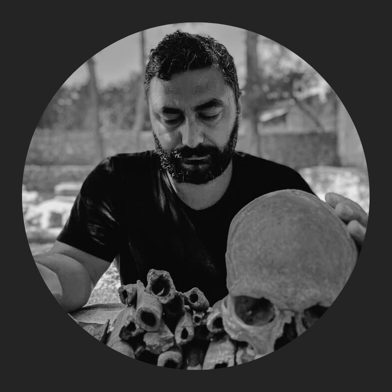

HISTORIANTHROPOLOGIST

Mehdi Doğan
Polimat — Tarih & Biyolojik Antropoloji
İnsan türünün uzun tarihinden bugüne bakan yazılar, videolar ve denemeler.

Polimat — Tarih & Biyolojik Antropoloji
İnsan türünün uzun tarihinden bugüne bakan yazılar, videolar ve denemeler.